Нос — фильтр и кондиционер
Губы сомкнуты, воздух идёт через нос: там он очищается, согревается и увлажняется. Язык лежит у нёба и мягко распирает верхнюю челюсть изнутри — это главный «естественный расширитель» [10].
Зубочелюстные аномалии — что это, откуда они берутся, как их лечат и почему ротовое дыхание и «безобидные» привычки в подростковом возрасте меняют лицо сильнее, чем кажется.
Зубочелюстная аномалия — отклонение в форме, размере и положении зубов, зубных рядов или челюстей, из‑за которого зубы смыкаются неправильно.
Смыкание зубов врачи называют окклюзией, а в быту — прикусом. Неправильный прикус — это не только про внешность. От него зависит, как вы жуёте, говорите, дышите и как нагружается височно‑нижнечелюстной сустав.
Большинство аномалий не врождённые, а приобретённые. Они формируются в детстве и подростковом возрасте, пока растут кости лица. Значит, на них можно повлиять — убрать причину и вовремя начать лечение [1, 2].
Листайте вниз — схема слева покажет, как шаг за шагом меняются лицо, нёбо и прикус у ребёнка, который годами дышит ртом.
Губы сомкнуты, воздух идёт через нос: там он очищается, согревается и увлажняется. Язык лежит у нёба и мягко распирает верхнюю челюсть изнутри — это главный «естественный расширитель» [10].
Увеличенные аденоиды, аллергия, искривление перегородки, частые насморки. Ребёнок начинает дышать ртом — и нередко продолжает, даже когда нос уже свободен: привычка закрепляется [7].
Чтобы воздух проходил, рот приоткрыт, а язык опускается на дно полости рта. Верхняя челюсть теряет внутреннюю опору, губы привыкают не смыкаться. Похожие изменения получали и в опытах, где носовое дыхание перекрывали искусственно [8].
Щёки давят снаружи, а изнутри давить некому. Со временем нёбо становится узким и высоким («готическим»), зубной ряд — V‑образным. Повышается риск скученности зубов и перекрёстного прикуса [7, 10].
Чтобы легче дышать ртом, голова запрокидывается, а нижняя челюсть опускается и уходит назад. Нижняя треть лица удлиняется, подбородок скошен — формируется «аденоидный» тип лица [7, 9].
Чаще встречаются дистальный, открытый и перекрёстный прикус. Ротовое дыхание — фактор риска, а не приговор: аномалия развивается не у каждого. Пока кости растут, лечение носа, тренировка правильного дыхания и ортодонт помогают исправить многое без операции.
К профилактике →Кость реагирует на постоянное давление. Даже слабой силы — например, пальца или языка — достаточно, чтобы зубы сместились, если она действует около 6 часов в день и дольше [10].
Палец давит на верхние резцы вперёд и на нижние — назад. Между резцами образуется щель: передние зубы перестают смыкаться. На рисунке 1 видно, как маленькая челюсть и привычка вместе формируют открытый прикус.
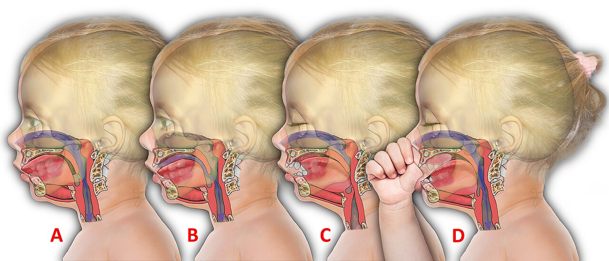
Язык опускается, нёбо сужается, лицо вытягивается. Самая «тихая» и самая частая причина.
Привычка грызть предметы смещает отдельные резцы, стирает эмаль и перегружает сустав.
Губа ложится за верхние резцы и выталкивает их вперёд, а нижние — назад.
При глотании язык упирается в передние зубы, а не в нёбо. Человек глотает больше тысячи раз в сутки — и каждый раз язык толкает зубы.
Постоянная опора на одну сторону смещает нижнюю челюсть вбок.
Поза головы меняет положение нижней челюсти и работу мышц шеи и лица.
Без жевательной нагрузки челюсти недоразвиваются, а молочные зубы плохо стираются и не освобождают место.
Эдвард Энгль, «отец ортодонтии», предложил оценивать прикус по одному ориентиру — первым постоянным молярам [3]. Ключ: передне‑щёчный бугор верхнего первого моляра должен попадать в межбугорковую борозду нижнего. Сдвиньте нижнюю челюсть и посмотрите, как меняется класс.
Моляры смыкаются правильно. Если есть проблема, то в положении отдельных зубов: скученность, тремы, повороты.
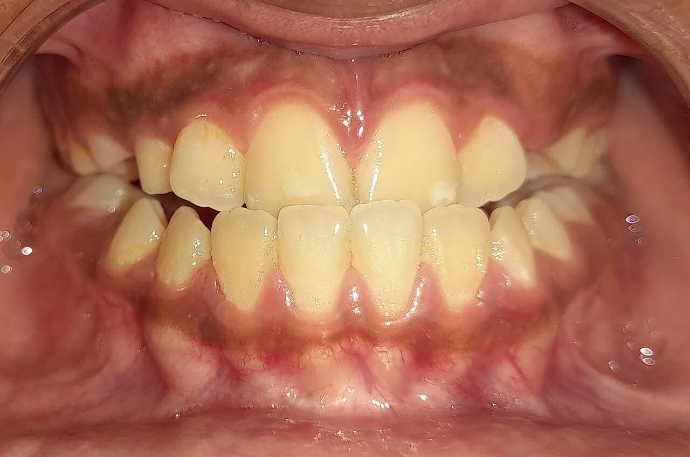
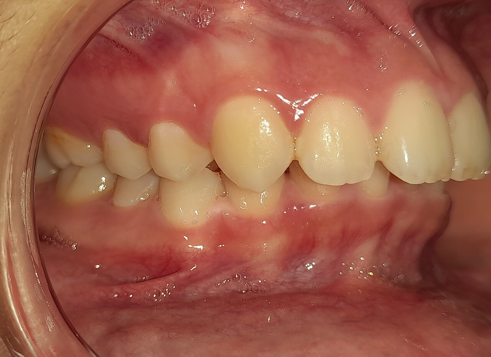
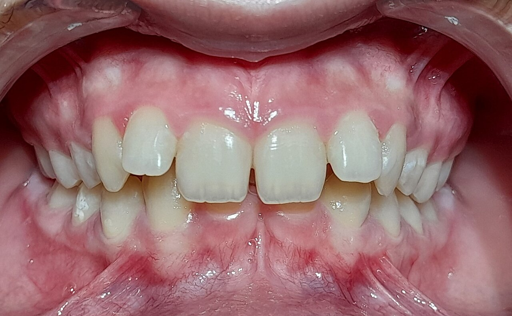
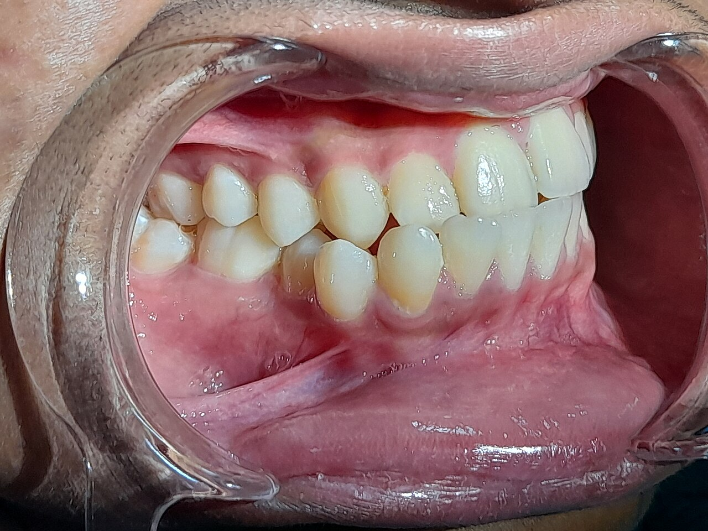
Ортодонт не «выпрямляет» зубы силой. Аппарат создаёт слабое постоянное давление: с одной стороны зуба кость рассасывается, с другой — нарастает, и зуб медленно перемещается — примерно на 1 мм в месяц. Чем раньше начать, тем больше можно сделать за счёт роста.
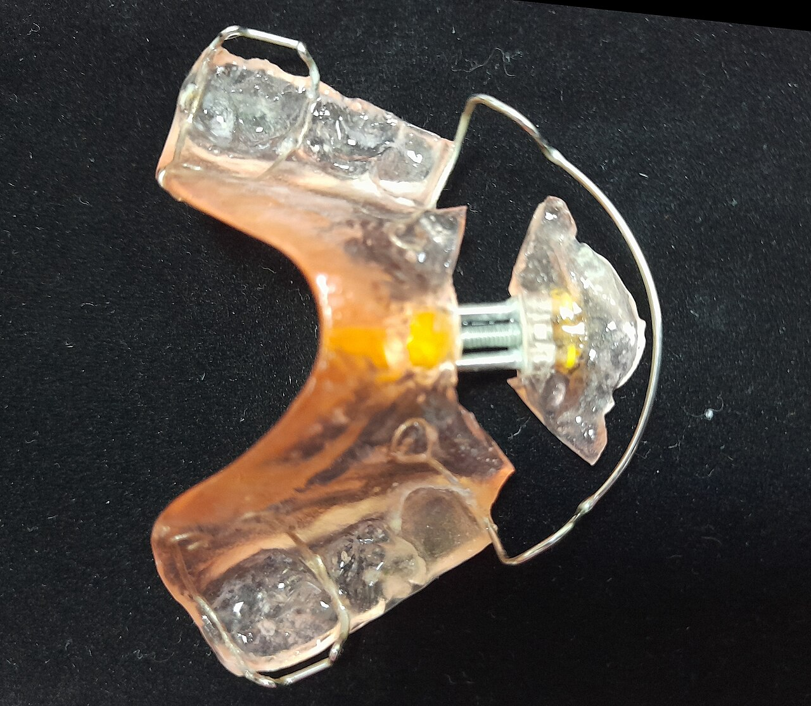
Пластмассовый аппарат с винтом и пружинами. Расширяет челюсть, двигает отдельные зубы.
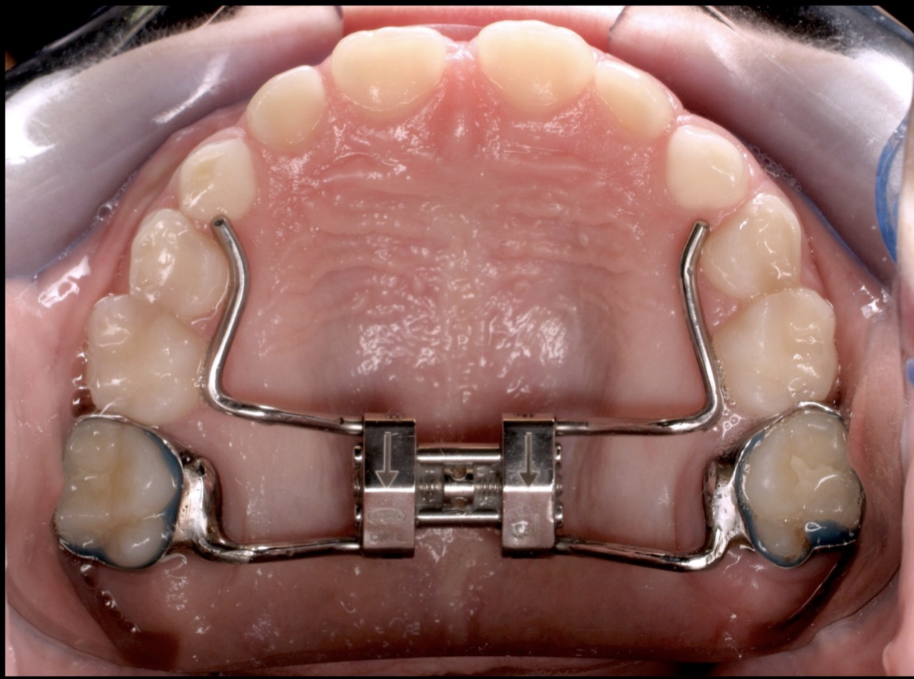
Раздвигает нёбный шов, пока он не сросся. Возвращает челюсти ширину, потерянную при дыхании ртом.
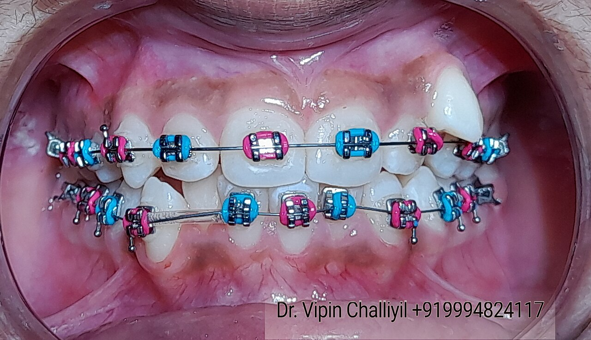
Замки на зубах и дуга с «памятью формы». Самый универсальный метод для сложных случаев.
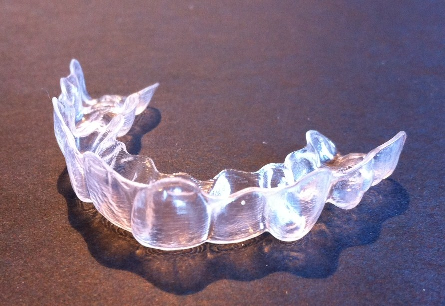
Серия прозрачных кап, каждую носят 1–2 недели по 22 часа в сутки. Почти незаметны.
Потяните ползунок по фото. Это реальные пациенты из открытых медицинских фотоархивов, у каждого снимка есть ссылка на источник.
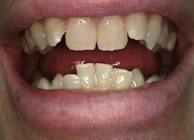
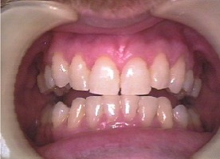
допосле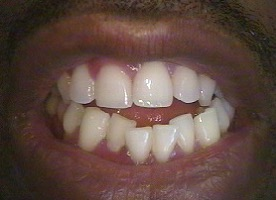
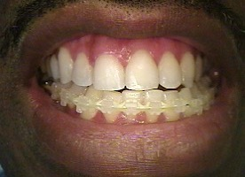
доэтап лечения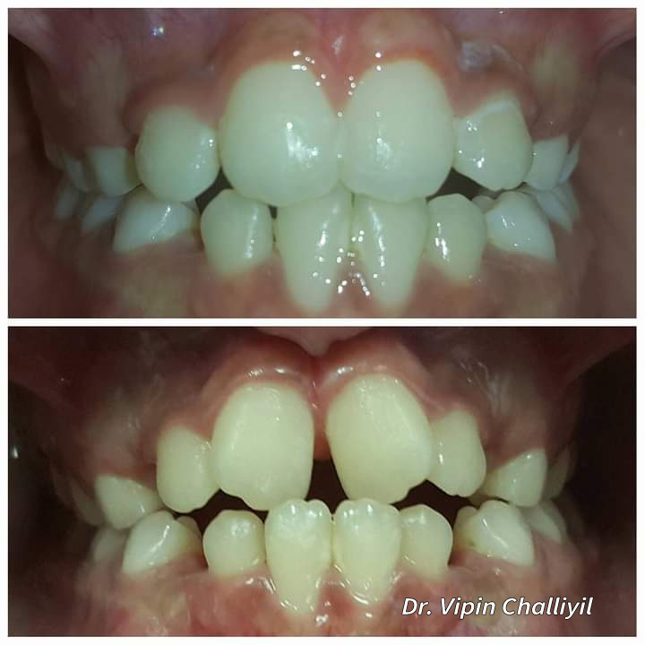
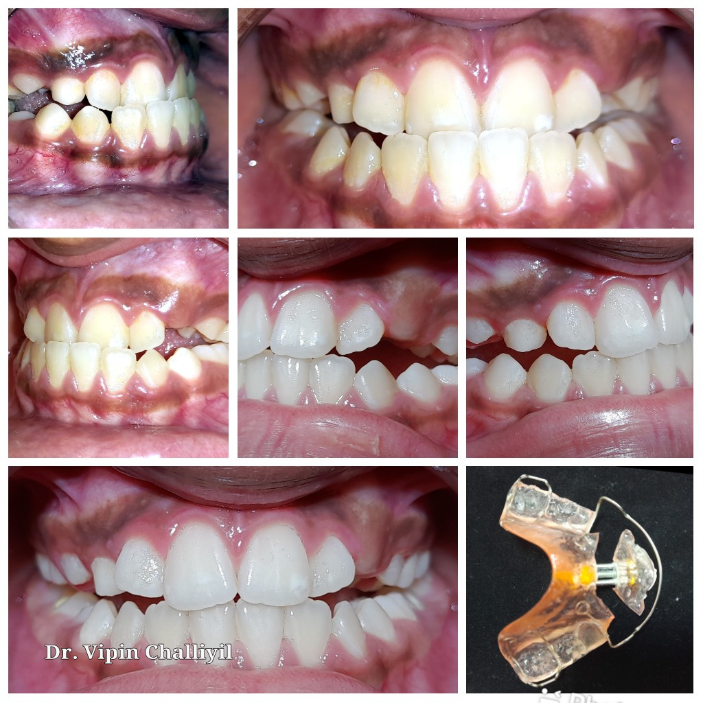
Профилактика дешевле и проще любого лечения. Нажимайте на полезные привычки — и смотрите, что происходит с улыбкой. Соберите все восемь.
3D-модель не загрузилась: браузер не поддерживает WebGL. Кнопки всё равно работают.
Цены ориентировочные: частные клиники крупных городов России, 2025–2026 годы. Точную сумму назовёт только врач после диагностики. В государственных детских поликлиниках часть ортодонтической помощи детям оказывают по ОМС.
| Услуга | От | До | Диапазон (логарифмическая шкала) |
|---|---|---|---|
Цены приведены для учебных целей и не являются публичной офертой. Они сильно зависят от города, клиники, бренда брекетов и сложности случая.
Десять вопросов по всему атласу — от определения до профилактики. После каждого ответа вы увидите объяснение и ссылку на раздел, где об этом рассказано.
Библиографические записи оформлены по ГОСТ Р 7.0.100–2018, подписи к рисункам и таблицам — по ГОСТ 7.32–2017. Все фотографии взяты из Wikimedia Commons под свободными лицензиями. Номер в квадратных скобках в подписи рисунка ведёт к записи в этом списке. Интерактивные схемы нарисованы автором атласа.